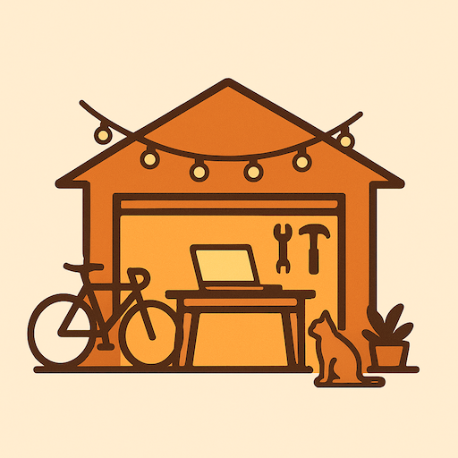

Skip to content

Neighborhood Lab
Tools for communities that choose to show up.
Care Commons
(web application demo)
Care Commons
(product marketing website)
Patreon
(give your financial support for continued development)